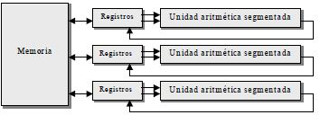
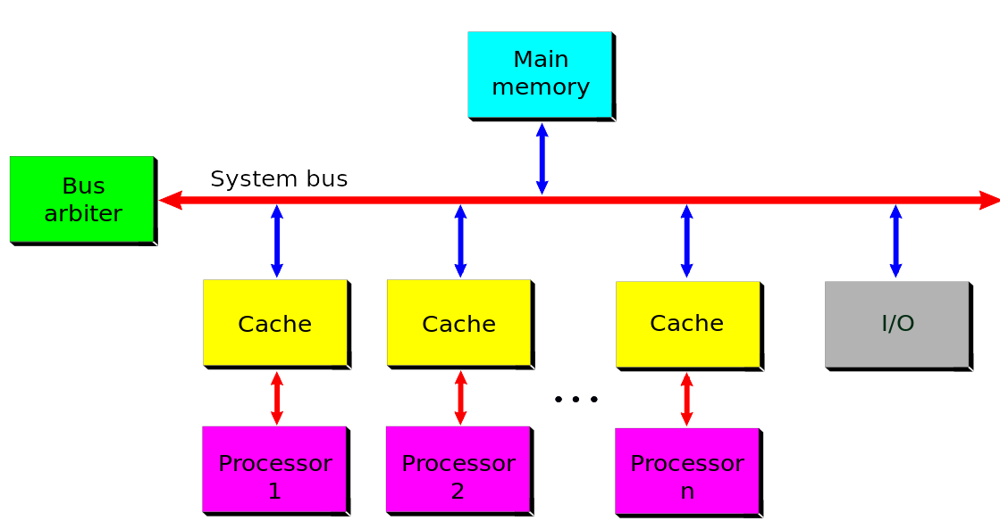
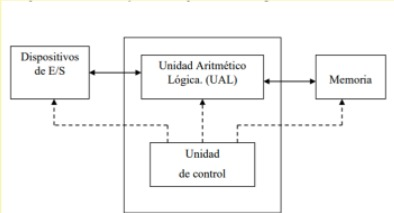
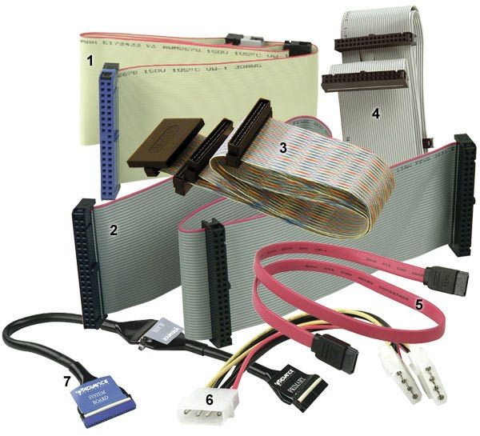
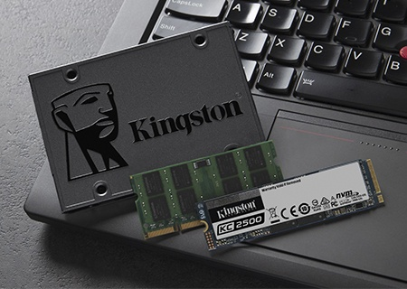
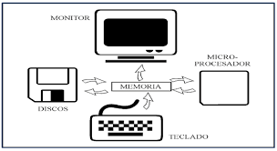
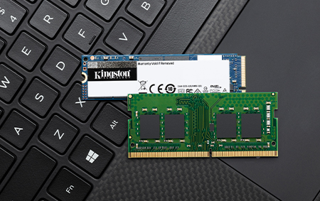
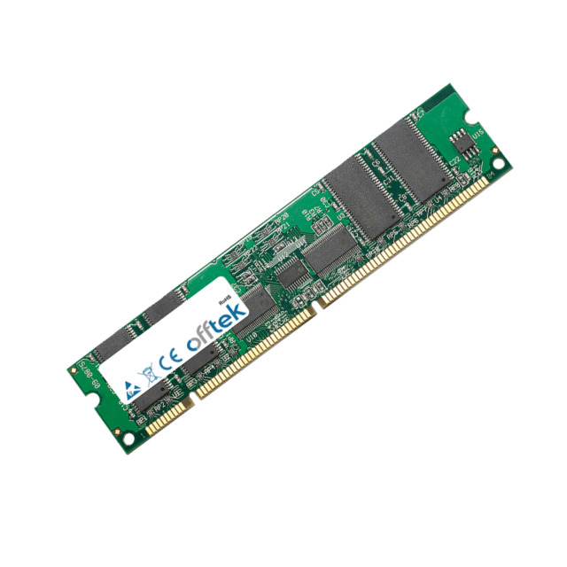
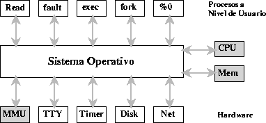
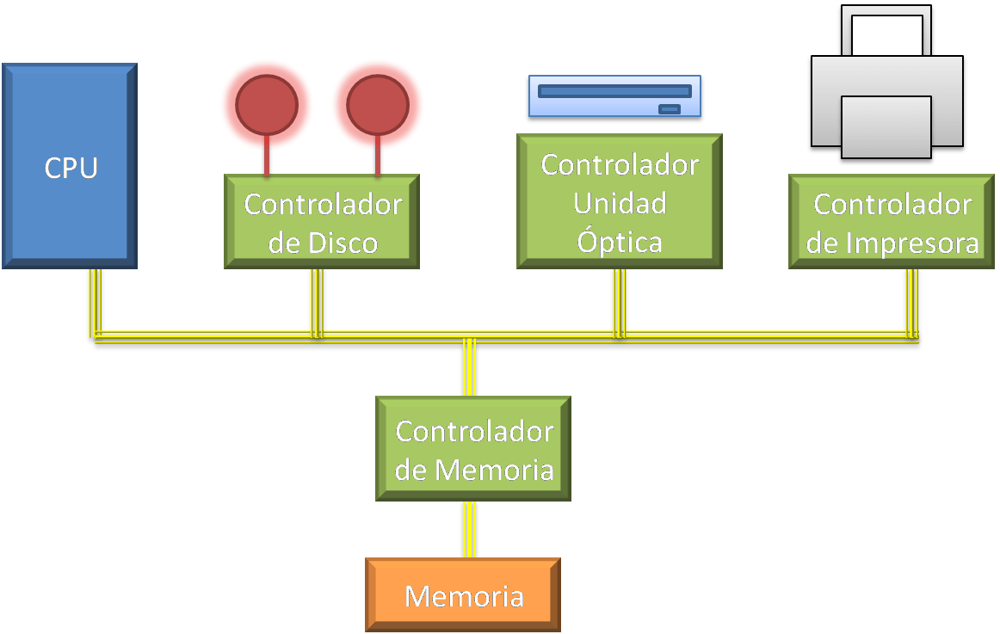

Un modelo de arquitectura de cómputo es una representación conceptual de cómo está organizado y diseñado un
sistema informático. Este modelo describe la estructura, los componentes y las interacciones entre ellos
dentro del sistema. Estos modelos son utilizados por los diseñadores de hardware y software para entender,
diseñar y desarrollar sistemas informáticos eficientes y funcionales.
Fueron desarrolladas en las primeras computadoras electromecánicas y de tubos de vacío. Aún se usan en procesadores empotrados de gama baja y son la base de la mayoría de arquitecturas modernas.

Usada en la computadora ENIAC.
Consiste en una unidad central de proceso que se comunica a través de un solo bus con un banco de memoria
donde se almacenan los códigos de instrucción del programa y los datos que procesará.
Esta arquitectura es la que más se emplea en la ctualidad ya que, es muy versátil.
Un ejemplo de esta versatilidad es el funcionamiento de los compiladores.
Su desventaja es que el bus de datos y direcciones único se convierte en un cuello
de botella por el que pasa toda la información que se lee o escribe a la memoria, obligando que
los accesos a esta sean secuenciales. Limita el grado de paralelismo.
En lugar de tener instrucciones cableadas directamente en la CPU, se asigna un código numérico (conocido como código de operación) a cada instrucción.
Estos códigos se almacenan en la misma memoria que los datos a procesar.
De esta manera, tanto los programas como los datos se encuentran en la misma unidad de memoria,
lo que facilita la programación y la flexibilidad en el diseño de software.
En la arquitectura Von Neumann, el procesador se divide en tres componentes principales:

Buscan mejorar el desempeño realizando paralelamente varias etapas del ciclo de instrucción a mismo tiempo. El procesador se divide en varias unidades funcionales independientes y se dividen entre ellas el procesamiento de las instrucciones.

Para comprenderlo. Supongamos que un procesador simple tiene un ciclo de instrucción
sencillo consistente, solamente en una etapa de búsqueda del código de instrucción y en
otra etapa de ejecución de la instrucción. En un procesador sin segmentación del cauce,
las dos etapas se realizarían de manera secuencial para cada una de las instrucciones.
Como se muestra en la siguiente figura:

En un procesador con segmentación del cause, cada una de estas etapas se asigna a una unidad funcional diferente, la búsqueda a la unidad de búsqueda y la ejecución a la unidad de ejecución. Las unidades pueden trabajar en forma paralela en instrucciones diferentes y se comunican por medio de una cola de instrucciones en la que la unidad de búsqueda coloca los códigos de instrucción que leyó para que la unidad de ejecución los tome de la cola y los ejecute.

Esta cola parece un tubo: las instrucciones entran por un extremo y salen por el otro. De ahí
proviene el nombre Pipelining o entubamiento.
En un procesador con segmentación, la unidad de búsqueda comenzaría buscando el código
de la primera instrucción en el primer ciclo de reloj. Durante el segundo ciclo del reloj, la
unidad de búsqueda obtendría el código de la instrucción 2, mientras que la unidad de
ejecución ejecuta la instrucción 1 y así sucesivamente.

Cuando se desea incrementar el
desempeño más allá de lo que
permite la técnica de segmentación
del cauce, se requiere utilizar más
de un procesador para la ejecución
del programa de aplicación.
Las CPU de
multiprocesamiento se
clasifican de la siguiente
manera (Clasificación de
Flynn)
son una clase de procesadores diseñados para realizar operaciones en paralelo en grandes conjuntos de datos. Utilizan instrucciones SIMD (Single Instruction, Multiple Data) para aplicar una operación a múltiples elementos de datos simultáneamente. Aunque la mayoría de las computadoras modernas utilizan la arquitectura Von Neumann, la Harvard sigue siendo relevante en aplicaciones específicas. En la actualidad, los procesadores modernos incluyen varios niveles de memoria caché con bancos separados para caché de programa y caché de datos, buscando un mejor desempeño sin perder la versatilidad. 
es un sistema basado en un procesador o microprocesador que está optimizado para aplicaciones que requieren operaciones numéricas a muy alta velocidad. Estos procesadores se utilizan especialmente para el procesamiento de señales y la representación de señales analógicas en tiempo real. Funcionan con muestras digitales provenientes de un conversor analógico/digital (ADC) y se destacan por su capacidad para trabajar con varios datos en paralelo y ejecutar instrucciones específicas para el procesado digital.
Varios procesadores comparten la misma memoria principal y periféricos I/O. Normalmente conectados por un bus común. Son simétricos ya que todos tienen derechos similares en cuanto al acceso a la memoria y periféricos y ambos son administrados por el Sistema Operativo
Son conjuntos de computadoras independientes conectadas en una LAN o por un bus de interconexión y que trabajan cooperativamente para resolver un problema. Es clave en su funcionamiento contar con un Sistema Operativo y programas de aplicación capaces de distribuir el trabajo entre las computadoras de red.

Diseñados originalmente para el procesamiento de Gráficos, con múltiples procesadores vectoriales sencillos, compoartiendo la misma memoria, la cual puede ser accedida por el CPU.
Además de las Arquitecturas clásicas
mencionadas anteriormente, en la
actualidad han aparecido Arquitecturas
híbridas entre la Von Newman y la
Harvard, buscando conservar la
flexibilidad, pero mejorando el
rendimiento.

CISC es un tipo de arquitectura de computadoras que promueve
el uso de gran número de instrucciones, permitiendo
operaciones complejas entre operandos situados en memoria o
en registros internos.
conjunto de instrucciones reducidas (Reduced Instruction Set
Computer) son procesadores que están diseñados para
ejecutar un número reducido de tipos de instrucciones que les
permite operar a una velocidad más elevada. La arquitectura
RISC principalmente requiere menos cantidad de hardware y
una mayor flexibilidad de construcción.
Es el cerebro de cada ordenador
Componente vital conocido como procesador
Se encarga de procesar todas las instrucciones del
dispositivo.
Cuanto mas potente sea, mas rapido podra hacer las
operaciones.
Ordenador tiene CPU y el telefono tiene SoC, estos
suelen poder hacer mas que el CPU estandar
Suele ser pequeño y de forma cuadrada, va instalado
en la placa madre del ordenador
Al tener varios nucleos, es capaz de realizar mas
operaciones a la vez, pero tambien depende de
como sean sus nucleos.
Los hilos (threads) son las secuencias de
instrucciones pertenecientes al SO
Su frecuencia se mide en gigahz(1.000.000.000) y
marca el ritmo con el que trabaja el procesador.

¿Para que y como sirve el CPU?
Ejecuta una secuencia de instrucciones y procesa los
datos de las mismas.
Se encarga de leer datos e instrucciones para realizar
cada una de las tareas (decodifica los datos y los
divide).
Las instrucciones no se realizan en orden una tras
otra, el CPU trabaja con varias a la vez.
Componentes del CPU
Unidad de control: Gestiona el procesamiento de instrucciones.
Registros: Ubicaciones de almacenamiento de memoria de alta
velocidad dentro del CPU.
ALU: Realiza operaciones aritmeticas basicas.
Unidad de gestion de memoria: Bus, gestionan las tareas
relacionadas con la memoria, interaccion de CPU y RAM
Reloj: Se basa en una senal para sincronizar sus operaciones
internas (lo coordina).
Nucleo: Interpreta y ejecuta acciones.
Memoria cache: Almacena los datos que el usuario busca con
frecuencia

¿Que es la unidad aritmetica logica?
Es un circuito digital que realiza operaciones lógicas
y aritméticas entre dos operados den bits
Estructura de una computadora digital
En una computadora digital, la unidad aritmético lógica se
localiza en la CPU (Unidad Central de Proceso)
y realiza operaciones con los datos que provienen de la memoria o de dispositivos externos

¿Qué son los registros?
Un registro es una memoria que esta ubicada en el procesador y se
encuentra en el nivel más alto en la jerarquía de memoria, por lo tanto
tiene una alta velocidad pero con poca capacidad para almacenar
datos que va desde los 4 bits hasta los 64 bits dependiendo del
procesador que se utilice. Los datos que almacena son los que se usan
frecuentemente
El número de registros del CPU es limitado, ya que
las compuertas lógicas del circuito integrado se emplean para implementar
las secuencias de control de estas instrucciones
especiales.

Son canales de comunicación que
permiten la transferencia de datos
entre diferentes componentes del
sistema.
Estos componentes
pueden ser la CPU, la memoria, los
dispositivos de almacenamiento, las
tarjetas de expansión, etc.

Tipos
Bus de sistema: Es el principal canal de comunicación en una computadora y
conecta la CPU con la memoria RAM.
Bus del Datos: Facilita la transferencia
de datos entre la unidad central de procesamiento (CPU),
la memoria y otros dispositivos conectados al sistema.
Bus de Direcciones: Se utiliza para especificar la ubicación de la memoria
o de los registros en la CPU a los que se desea acceder.
Bus de control:Se encarga de transmitir
señales de control que coordinan y regulan las operaciones dentro del sistema.
trabaja en conjunto con los buses de datos y de direcciones para garantizar que las operaciones
se realicen de manera eficiente y en el orden adecuado.
Bus de E/S(Entrada/Salida)Es una ruta de comunicación que
conecta la CPU con los dispositivos externos, facilitando la entrada y
salida de datos en una computadora.

¿Qué es la memoria?
En informática, la memoria es el dispositivo que retiene,
memoriza o almacena datos informáticos durante algún periodo de tiempo.
La memoria proporciona una de las principales funciones de la computación moderna:
el almacenamiento de información y conocimiento. Es uno de los componentes fundamentales de la computadora,
que interconectada a la unidad central de procesamiento (CPU) y los dispositivos de entrada/salida,
implementan lo fundamental del modelo de computadora de la arquitectura de Von Neumann.

Gestion de memoria
La gestión de memoria en un sistema operativo es una función crucial que controla
y coordina el uso de la memoria de la computadora
Sistemas de memoria virtual
Es una técnica de gestión de la memoria implementada por la mayoría de los sistemas operativos.
Utiliza una combinación de RAM y almacenamiento en disco para dar la ilusión a los usuarios de que
tienen más memoria de la que realmente está disponible. Aunque tiene ventajas,
como permitir ejecutar programas que requieren más memoria de la que el sistema tiene físicamente,
también presenta desventajas, como
el aumento en el tiempo de acceso a la memoria debido a la velocidad más lenta del
disco duro en comparación con la RAM

Administracion de memoria
Se refiere a los métodos y operaciones
que gestionan la memoria en un sistema informático.
Su objetivo es asignar y liberar memoria de manera eficiente para los procesos y programas en ejecución.

Tecnicas
Partición fija: División de la memoria
libre en varias partes (de igual o distinto
tamaño)
Dinámica: particiones de
la memoria en tamaños que pueden ser variables,
según la cantidad de memoria que necesita cada proceso.

¿Qué es?
La RAM (Random Access Memory), es aquella donde
almacenamos de manera temporal los datos de los
programas utilizados en este momento.
Existen 2 caracteristicas que la destacan de las demas:
Velocidad y los datos solo se almacenan de forma
temporal.
A mayor RAM mayor velocidad de gestionamiento.

Tipos
DDR
Son capaces de llevar a
cabo dos operaciones en cada ciclo de reloj.
Se activan dos veces en cada ciclo de la señal de
reloj, bien por nivel o por flanco.
SDR: particiones de
Solo ejecutan una operacion
de lectura o escritura.

¿Para que sirve?
Es la encargada de hacer las tareas de forma más
inmediata y almacenar las instrucciones de la CPU o los
datos que las necesitan constantemente.
Los navegadores suelen ocupar mucha memoria RAM al
igual que las aplicaciones que se queden abiertas.
¿Qué es?
Es la memoria de acceso rápido de una
computadora, que guarda temporalmente las
últimas informaciones procesadas.
Es un búfer especial de memoria que poseen las
computadoras, que funciona de manera similar a la
memoria principal, pero es de menor tamaño y de
acceso más rápido.

Nivel 1
Se encuentra en el núcleo del procesador. Es
utilizada para almacenar y acceder a datos e
instrucciones importantes y de uso frecuente,
agilizando los procesos al ser el nivel que ofrece
un tiempo de respuesta menor.
Nivel 2
Se encarga de almacenar datos de uso frecuente,
es mayor que la caché L1, pero a costa de ser más
lenta, aun así es más rápida que la memoria
principal (RAM).
Puede contener una copia del nivel 1 además de
información extra, o exclusiva y que su contenido
sea totalmente diferente de la cache L1
Nivel 3
Es más rápida que la memoria principal (RAM), pero
más lenta que L2, ayuda a que el sistema guarde
gran cantidad de información agilizando las tareas
del procesador.
En esta memoria se agiliza el acceso a datos e
instrucciones que no fueron localizadas en L1 o L2.
Al igual que la L2, puede ser inclusiva y contener
una copia de L2 además de información extra.
Una computadora no puede estar formado sólo por la CPU y la memoria. Para darle alguna utilidad debe de
comunicarse con el mundo exterior a través del subsistema de entrada/salida (I/O input/output).
Funciones del Sistema de E/S
1. DIRECCIONAMIENTO: selección del dispositivo
correspondiente de entre los
dispositivos disponibles en el sistema.
2. SINCRONIZACIÓN: ha de posibilitar que la
CPU y la memoria se puedan comunicar con
los dispositivos de E/S .
3. TRANSFERENCIA: el sistema E/S debe de
tener toda la circuitería y señales de
comunicación apropiadas.
Los módulos son las interfaces que tiene la
computadora con el exterior. Su obetivo es facilitar
las operaciones de E/S entre los periféricos y la
memoria o los registros del procesador.
Un módulo de E/S se conecta con el procesador a
través de un bus. Los datos que se transfieren se
almacenan temporalmente en un registro de datos.

Caracteristicas
Conectar con la CPU y memoria vía bus del
sistema.
Conectar con los periféricos mediante
conexiones de datos particularizadas.
La arquitectura de un E/S se diseña de forma
que permita una forma sistemática de controlar
las interacciones con el mundo exterior y
proprocione al sistema operativo la
información que necesita para gestionar la
actividad de E/S.

Control de transferencia de datos
1.La CPU pide al módulo E/S del periférico
deseado.
2. El módulo E/S proporciona el estado.
3.Si el periférico está listo, la CPU solicita la
transferencia de datos por medio de un
comando al módulo E/S.
4. El módulo E/S obtiene el dato del periférico.
5. El dato se transfiere desde el módulo a la CPU.

Con la E/S programable, el módulo
realiza la instrucción que le
encarga la CPU y coloca los bits
correspondientes en el registro de
estado.
Es responsabilidad de la CPU
comprobar periódicamente el
estado hasta que se complete la
instrucción.

Esta técnica pretende evitar que el
procesador pare o haga trabajo
improductivo, mientras que espera a que el
periférico esté preparado para hacer una
nueva operación.
El hardware de la computadora, necesita
tener un conjunto de líneas de control del
bus del sistema y de petición de
interrupción.
Funcionamiento
El procesador ejecuta instrucciones de un programa.
Al finalizar cada instrucción comprueba si se ha
producido una interrupción.
1.
En caso afirmativo se salva el estado actual del
programa (contador del programa y registros) y se
salta a ejecutar la rutina de servicio
correspondiente.
2.
La rutina de servicio efectúa las operaciones
apropiadas en la E/S para realizar la transferencia
de datos solicitada.
3.
Al finalizar la rutina de servicio se recupera el
estado de la CPU y se continúa ejecutando el
programa que se estaba ejecutando antes de la
interrupción.
Interrupciones
ENMASCARABLES (se pueden dejar de atender por software)
NO ENMASCARABLES (siempre atendidas)
Dos formas de conocer la
dirección/posición (vector) donde se
encuentra la rutina de servicio de la
interrupción
Vector de interrupciones siempre FIJO ó
el periférico suministra el vector de
interrupción
Permite que el dispositivo de red transfiera datos directamente a la memoria del sistema,
reduciendo la carga en la CPU.
Sin embargo, debido a la frecuencia y la aleatoriedad de los paquetes,
no siempre permite que el sistema entre en un estado de energía más bajo.
La DMA es utilizada en:
Controladores de disco
Tarjetas graficas
Tarjetas de sonido
Es esencial en todo ordenador moderno, ya que permite a
dispositivos de diferentes velocidades comunicarse sin someter a
la CPU a una carga masiva de interrupciones.
Mayor DMA significa mayor energia guardada pero pueden
aumentar la latencia de red del sistema.
Una transferencia DMA coniste principalmente en copiar un
bloque de memoria de un dispositivo a otro.
Un ejemplo es al mover un bloque de memoria desde una memoria
externa a una interna mas rapida.
Puede llevar a problemas de coherencia de caché. Imagine una
CPU equipada con una memoria caché y una memoria externa
que se pueda acceder directamente por los dispositivos que
utilizan DMA.
Cuando la CPU accede a X lugar en la memoria, el valor actual se
almacena en la caché. Si se realizan operaciones posteriores en
X, se actualizará la copia en caché de X, pero no la versión de
memoria externa de X.
Si la caché no se vacía en la memoria
antes de que otro dispositivo intente acceder a X, el dispositivo
recibirá un valor caducado de X.
Del mismo modo, si la copia en caché de X no es invalidada
cuando un dispositivo escribe un nuevo valor en la memoria,
entonces la CPU funcionará con un valor caducado de X.

EL canal de E/S es una extensión del bus del 8088.
Los canales de E/S proporcionan una línea Ready para
permitir operaciones con dispositivos de memoria o de E/S
lentos.
Los ciclos de reloj se presentan aproximadamente cada 15 m
sec y requieren de cinco ciclos de reloj.
Los dispositivos de E/S están direccionados utilizando un
mapeo de E/S con el espacio de direccionamiento. El canal
proporciona a las tarjetas de E/S 512 direcciones de
dispositivos.
Se refiere a un conjunto de líneas de comunicación que permiten
la transferencia de datos entre los diferentes componentes de la
computadora.
Permiten que el procesador se comunique con la memoria, los
dispositivos de almacenamiento, las tarjetas de expansión y otros
componentes.
Es una parte fundamental de la comunicación entre los diferentes o elementos de un ordenador. Es un medio físico por el cuál pueden viajar las señales con la información que se tiene que transmitir. Hay diferentes tipos de buses: Método de envío de la información. Según las direcciones. Según la información que transporten.
BUSES SEGÚN EL ENVÍO DE INFORMACIÓN
Paralelo: Los datos son enviados por bytes
al mismo tiempo, con la ayuda de
varias líneas que tienen funciones
fijas.
Por ejemplo, si se desea crear un
bus paralelo para transmitir datos
de 8 bits, se necesitan 8 líneas
individuales.
En serie:
La información se transmite de bit
a bit, lo que implica que solo se
necesita una línea de datos.
Es usado en buses para discos
duros

BUSES segun las direcciones
Unidireccional:
Solo permite la
transmisión en una
dirección o sentido. Se
usa, por ejemplo, en un
sistema de CPU simple,
donde solo se envían
direcciones a la
memoria.
Bidireccional:
Permite la transmisión
de datos en una
dirección u otra, pero no
ambas al mismo tiempo.
Duplex Completo:
Se transmiten datos en
ambos sentido o
direcciones de manera
simultánea. Para estas
transmisiones, se
requiere el uso de
múltiples vías
separadas.

BUSES SEGÚN la información que transporten
Dirección:
Se encargan de
indicar la posición de
memoria o el
dispositivo con el que
se desea establecer
comunicación.
Control:
Transportan señales
de estado de las
operaciones
efectuadas por la
CPU a las demás
unidades.
Datos:
Mueve los datos entre
los dispositivos del
hardware de entrada,
de salida y de
almacenamiento.

Un bus es un medio compartido de comunicación constituido por un
conjunto de líneas (conductores) que conecta las diferentes unidades de
un computador. La principal función de un bus será,
pues, servir de soporte para la realización de transferencias de información entre dichas unidades.
La unidad que inicia y controla la transferencia se conoce como
master del bus para dicha transferencia, y la unidad sobre la que
se realiza la transferencia se conoce como slave.
Los papeles de
master y slave son dinámicos, de manera que una misma unidad
puede realizar ambas funciones en transferencias diferentes.

Por ejemplo, una unidad de DMA hace de slave en la inicialización
que realiza el master, la CPU, para una operación de E/S. Sin
embargo, cuando comienza la operación, la unidad de DMA juega
el papel de master frente a la memoria, que en esta ocasión hace de slave.
Para garantizar el acceso ordenado al bus, existe un sistema de
arbitraje, centralizado o distribuido, que establece las prioridades
cuando dos o más unidades pretenden acceder al mismo tiempo
al bus, es decir, garantiza que en cada momento sólo exista un master.
Los computadores modernos tienen por lo menos 4 buses
diferentes (bus interno, bus del procesador, bus del caché, bus
local de E/S, bus estándar de E/S).
Se les considera una jerarquía, porque cada bus se conecta al
nivel superior a él dentro del computador, integrando así todas las
partes del computador.
Interno:
Este mueve datos entre
los componentes internos
del microprocesador.
Procesador:
El bus del procesador
es el más rápido
tratándose de que
este es el dispositivo
más rápido del
computador.
Cache:
Un bus de caché es un
bus de alta velocidad
dedicado que utiliza un
procesador de
computadora para
comunicarse con su
memoria caché.
Local:
Alta velocidad
conecta el procesador
a la caché sin
interrumpir el flujo de
datos. Permite acceso
rápido a los datos en
caché y la conexión
de dispositivos de
Estandar:
Conexión más lenta a través
de otro adaptador debido a
las líneas eléctricas que unen las partes del
microprocesador, formando el
bus interno por donde circulan
datos, señales de control y
direcciones de memoria, que
en un microprocesador de 32
bits consta de 32 líneas.
Forma de comunicacion de software y hardware con la CPU.
Al escribir en su teclado, el hardware y software respectivos
envian interrupciones a la CPU para activar el procesamiento de
su entrada.
Tambien pueden decirle a la PCU que ocurrio un error, y esto
puede causar un aumento en el uso de la CPU, en un sistema
saludable, estas se extenderan entre el 0.1% y el 2% del uso de la
CPU
Consiste en un mecanismo que le permite al hardware la
invocacion de una rutina fuera del control del programa que esta
siendo ejecutado.
Es una supension temporal de la ejecucion de un proceso,para
pasar a ejecutar una subrutina de servicio de interrupción, la cual,
por lo general, no forma parte del programa, sino que pertenece
al sistema operativo o al BIOS. Una vez finalizada dicha subrutina,
se reanuda la ejecución del programa.
La primera técnica que se empleó para esto fue el polling, que
consistía en que el propio procesador se encargara de sondear
los dispositivos periféricos cada cierto tiempo para averiguar si
tenía pendiente alguna comunicación para él.
